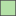

<!doctype html>
<html lang="en">
    <head>
        <meta charset="utf-8">
        <meta http-equiv="X-UA-Compatible" content="IE=edge">
        <meta name="viewport" content="initial-scale=1,user-scalable=no,maximum-scale=1,width=device-width">
        <meta name="mobile-web-app-capable" content="yes">
        <meta name="apple-mobile-web-app-capable" content="yes">
        <link rel="stylesheet" href="css/leaflet.css">
        <link rel="stylesheet" href="css/qgis2web.css"><link rel="stylesheet" href="css/fontawesome-all.min.css">
        <style>
        #map {
            width: 1534px;
            height: 839px;
        }
        </style>
        <title></title>
    </head>
    <body>
        <div id="map">
        </div>
        <script src="js/qgis2web_expressions.js"></script>
        <script src="js/leaflet.js"></script>
        <script src="js/leaflet.rotatedMarker.js"></script>
        <script src="js/leaflet.pattern.js"></script>
        <script src="js/leaflet-hash.js"></script>
        <script src="js/Autolinker.min.js"></script>
        <script src="js/rbush.min.js"></script>
        <script src="js/labelgun.min.js"></script>
        <script src="js/labels.js"></script>
        <script src="data/Geotagged_tweets_1.js"></script>
        <script>
        var map = L.map('map', {
            zoomControl:true, maxZoom:28, minZoom:1
        })
        var hash = new L.Hash(map);
        map.attributionControl.setPrefix('<a href="https://github.com/tomchadwin/qgis2web" target="_blank">qgis2web</a> &middot; <a href="https://leafletjs.com" title="A JS library for interactive maps">Leaflet</a> &middot; <a href="https://qgis.org">QGIS</a>');
        var bounds_group = new L.featureGroup([]);
        function setBounds() {
            if (bounds_group.getLayers().length) {
                map.fitBounds(bounds_group.getBounds());
            }
        }
        var layer_EsriLightGray_0 = L.tileLayer('http://server.arcgisonline.com/arcgis/rest/services/Canvas/World_Light_Gray_Base/MapServer/tile/{z}/{y}/{x}', {
            opacity: 1.0,
            attribution: '',
            minZoom: 1,
            maxZoom: 28,
            minNativeZoom: 0,
            maxNativeZoom: 22
        });
        layer_EsriLightGray_0;
        map.addLayer(layer_EsriLightGray_0);
        function pop_Geotagged_tweets_1(feature, layer) {
            var popupContent = '<table>\
                    <tr>\
                        <td colspan="2">' + (feature.properties['GEOID'] !== null ? Autolinker.link(feature.properties['GEOID'].toLocaleString(), {truncate: {length: 30, location: 'smart'}}) : '') + '</td>\
                    </tr>\
                    <tr>\
                        <th scope="row">State</th>\
                        <td>' + (feature.properties['State'] !== null ? Autolinker.link(feature.properties['State'].toLocaleString(), {truncate: {length: 30, location: 'smart'}}) : '') + '</td>\
                    </tr>\
                    <tr>\
                        <th scope="row">HomelessTweets</th>\
                        <td>' + (feature.properties['HomelessTweets'] !== null ? Autolinker.link(feature.properties['HomelessTweets'].toLocaleString(), {truncate: {length: 30, location: 'smart'}}) : '') + '</td>\
                    </tr>\
                    <tr>\
                        <th scope="row">Covid19Tweets</th>\
                        <td>' + (feature.properties['Covid19Tweets'] !== null ? Autolinker.link(feature.properties['Covid19Tweets'].toLocaleString(), {truncate: {length: 30, location: 'smart'}}) : '') + '</td>\
                    </tr>\
                    <tr>\
                        <th scope="row">Difference</th>\
                        <td>' + (feature.properties['Difference'] !== null ? Autolinker.link(feature.properties['Difference'].toLocaleString(), {truncate: {length: 30, location: 'smart'}}) : '') + '</td>\
                    </tr>\
                </table>';
            layer.bindPopup(popupContent, {maxHeight: 400});
        }

        function style_Geotagged_tweets_1_0(feature) {
            if (feature.properties['Difference'] >= -288.000000 && feature.properties['Difference'] <= -0.500000 ) {
                return {
                pane: 'pane_Geotagged_tweets_1',
                opacity: 1,
                color: 'rgba(82,82,82,1.0)',
                dashArray: '',
                lineCap: 'butt',
                lineJoin: 'miter',
                weight: 1.0, 
                fill: true,
                fillOpacity: 1,
                fillColor: 'rgba(180,225,167,1.0)',
                interactive: true,
            }
            }
            if (feature.properties['Difference'] >= -0.500000 && feature.properties['Difference'] <= 0.500000 ) {
                return {
                pane: 'pane_Geotagged_tweets_1',
                opacity: 1,
                color: 'rgba(82,82,82,1.0)',
                dashArray: '',
                lineCap: 'butt',
                lineJoin: 'miter',
                weight: 1.0, 
                fill: true,
                fillOpacity: 1,
                fillColor: 'rgba(255,255,191,1.0)',
                interactive: true,
            }
            }
            if (feature.properties['Difference'] >= 0.500000 && feature.properties['Difference'] <= 143.000000 ) {
                return {
                pane: 'pane_Geotagged_tweets_1',
                opacity: 1,
                color: 'rgba(82,82,82,1.0)',
                dashArray: '',
                lineCap: 'butt',
                lineJoin: 'miter',
                weight: 1.0, 
                fill: true,
                fillOpacity: 1,
                fillColor: 'rgba(43,131,186,1.0)',
                interactive: true,
            }
            }
        }
        map.createPane('pane_Geotagged_tweets_1');
        map.getPane('pane_Geotagged_tweets_1').style.zIndex = 401;
        map.getPane('pane_Geotagged_tweets_1').style['mix-blend-mode'] = 'normal';
        var layer_Geotagged_tweets_1 = new L.geoJson(json_Geotagged_tweets_1, {
            attribution: '',
            interactive: true,
            dataVar: 'json_Geotagged_tweets_1',
            layerName: 'layer_Geotagged_tweets_1',
            pane: 'pane_Geotagged_tweets_1',
            onEachFeature: pop_Geotagged_tweets_1,
            style: style_Geotagged_tweets_1_0,
        });
        bounds_group.addLayer(layer_Geotagged_tweets_1);
        map.addLayer(layer_Geotagged_tweets_1);
        var baseMaps = {};
        L.control.layers(baseMaps,{'Geotagged_tweets<br /><table><tr><td style="text-align: center;"></td><td>More Covid than Homeless</td></tr><tr><td style="text-align: center;"></td><td>Equal</td></tr><tr><td style="text-align: center;"></td><td>More Homeless than Covid</td></tr></table>': layer_Geotagged_tweets_1,"Esri Light Gray": layer_EsriLightGray_0,},{collapsed:false}).addTo(map);
        setBounds();
        </script>
    </body>
</html>
